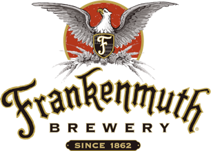

The following are the breweries featured on this site. Clicking on the logo or the name of the brewery will take you to their own personal webpage. Clicking on the address location will take you to Mapquest so you can plan your journey to visit each brewery. There are a lot of breweries in Michigan, and this is not a definative list. These are just some of the breweries that you may find at your local grocery store or speciality beer store. To see a full list of all the breweries in Michigan check out the Michigan Brewers Guild's "find MI beer map". This is a great resouce to find local breweries that are in your area.
Arbor Brewing Company is located at 720 Norris Ypsilanit, MI. This brewery was founded in 1995 by Matt and Rene Greff who had a passion for home brewing beer. They have two locations in Michigan. One in Ann Arbor and one in Ypsilanti. They recently opened their third brew pub in India in 2012.
Arcadia Ales is located at 103 W. Michigan Ave. Battle Creek, MI. Arcadia opened in 1996 and has won awards for their beers in 1998, 2003, 2007, and 2009.
Atwater Brewery is located at 237 Joseph Campau St in Detroit Atwater is located within a factory warehouse from 1919. Want to take a peek inside their brewery and get a 360 degree view? Click here
Bells Brewery is located at 355 E. Kalamazoo Ave in Kalamazoo. Bells brewery started in 1985. Bells was also the first brewery in Michigan to have an on-site pub.
Dark Horse Brewery is located at 511 S. Kalamazoo Ave in Marshall. Dark Horse Brewery, owned by the Morse family, opened it's doors in 1997 after a restaurant redesign was turned into a brew pub. Dark Horse beers are starting to gain more notoriety after turning down a chance to have their beer featured in a Nickleback music video.

Founders Brewing is located at 235 Grandville Ave in Grand Rapids. Founders was founded by Mike Stevens and Dave Engbers in 1997. Their beers are currently available in 25 states and they produce about 340,000 barrels of beer per year.

Frankenmuth Brewery is located at 425 S. Main St in Frankenmuth The current version of the Frankenmuth Brewery was founded by Randall E. Heine in 1990. Though the brewery where it stands today can trace it roots back to 1862. Frankenmuth Brewery is the nation's second oldest microbrewery.
Mackinaw Brewing Co is located at 161 E. Front St. in Traverse City Mackingaw Brewing Co was the first brewery in Traverse City. They opened their doors in 1997, and their head brewer is Mike Dwyer.
Motor City Brewing is located at 470 West Canfield in Detroit. Motor City Brewing Works was founded in 1994. This brewery has been featured in GQ, and Playboy magazine. Along with articles in the Detroit News.
North Peak Brewery is located at 400 W. Front St. in Traverse City. North Peak was founded in 1997 by the Carlson, Lobdell, and Czaplicka families. The brewery is currently located in what once used to be the Big Daylight Candy Factory in the late 1890's.
Bad Bear Brewery is located at 2110 N Concord Rd in Albion. Bad Bear Brewery opened in 2011 and is owned by John Burtka. John also is the owner of Sleeping Bear Winery which is located in the same location as the brewery.